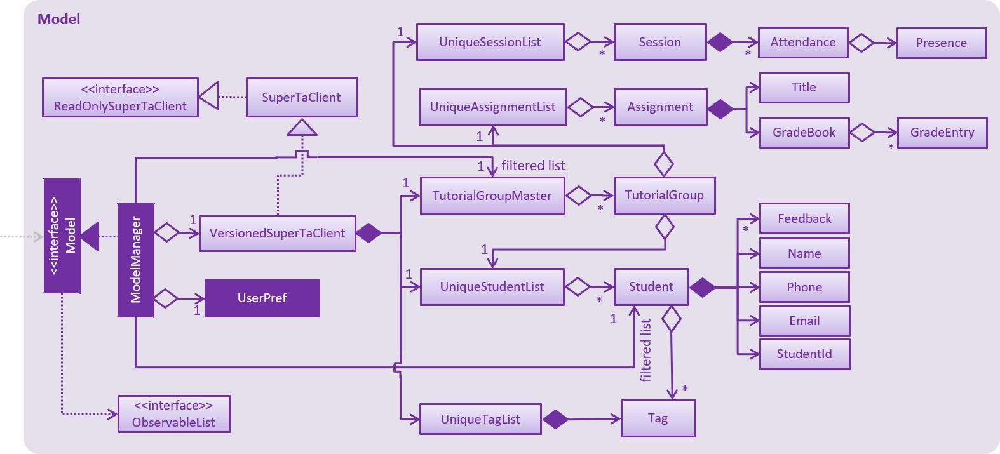

By: Team SE-EDU Since: Jun 2016 Licence: MIT
1. Introduction
Welcome to the SuperTA Developer Guide. This guide provides information to help you get started as a SuperTA contributor, allowing you to code, test and improve on the software without much hassle.
SuperTA is a desktop application for Teaching Assistants and Professors in NUS School of Computing. It provides a convenient, flexible and fast method to manage students and their tutorials. This software is also designed to have the Command Line Interface (CLI) to be the primary mode of input while the GUI is used for visual feedback to the user.
If you’re brand new to SuperTA and want to jump into code, start with Section 2, “Setting up”.
2. Setting up
2.1. Prerequisites
-
JDK
9or laterJDK 10on Windows will fail to run tests in headless mode due to a JavaFX bug. Windows developers are highly recommended to use JDK9. -
IntelliJ IDE
IntelliJ by default has Gradle and JavaFx plugins installed.
Do not disable them. If you have disabled them, go toFile>Settings>Pluginsto re-enable them.
2.2. Setting up the project in your computer
-
Fork this repo, and clone the fork to your computer
-
Open IntelliJ (if you are not in the welcome screen, click
File>Close Projectto close the existing project dialog first) -
Set up the correct JDK version for Gradle
-
Click
Configure>Project Defaults>Project Structure -
Click
New…and find the directory of the JDK
-
-
Click
Import Project -
Locate the
build.gradlefile and select it. ClickOK -
Click
Open as Project -
Click
OKto accept the default settings -
Open a console and run the command
gradlew processResources(Mac/Linux:./gradlew processResources). It should finish with theBUILD SUCCESSFULmessage.
This will generate all resources required by the application and tests. -
Open
XmlAdaptedStudent.javaandMainWindow.javaand check for any code errors-
Due to an ongoing issue with some of the newer versions of IntelliJ, code errors may be detected even if the project can be built and run successfully
-
To resolve this, place your cursor over any of the code section highlighted in red. Press ALT+ENTER, and select
Add '--add-modules=…' to module compiler optionsfor each error
-
-
Repeat this for the test folder as well (e.g. check
XmlUtilTest.javaandHelpWindowTest.javafor code errors, and if so, resolve it the same way)
2.3. Verifying the setup
-
Run the
seedu.superta.MainAppand try a few commands -
Run the tests to ensure they all pass.
2.4. Configurations to do before writing code
2.4.1. Configuring the coding style
This project follows oss-generic coding standards. IntelliJ’s default style is mostly compliant with ours but it uses a different import order from ours. To rectify,
-
Go to
File>Settings…(Windows/Linux), orIntelliJ IDEA>Preferences…(macOS) -
Select
Editor>Code Style>Java -
Click on the
Importstab to set the order-
For
Class count to use import with '*'andNames count to use static import with '*': Set to999to prevent IntelliJ from contracting the import statements -
For
Import Layout: The order isimport static all other imports,import java.*,import javax.*,import org.*,import com.*,import all other imports. Add a<blank line>between eachimport
-
Optionally, you can follow the UsingCheckstyle.adoc document to configure Intellij to check style-compliance as you write code.
2.4.2. Updating documentation to match your fork
After forking the repo, the documentation will still refer to the CS2103-AY1819S1-T16-2 repo.
If you plan to develop this fork as a separate product (i.e. instead of contributing to CS2103-AY1819S1-T16-2), you should do the following:
-
Configure the site-wide documentation settings in
build.gradle, such as thesite-name, to suit your own project. -
Replace the URL in the attribute
repoURLinDeveloperGuide.adocandUserGuide.adocwith the URL of your fork.
2.4.3. Setting up CI
Set up Travis to perform Continuous Integration (CI) for your fork. See UsingTravis.adoc to learn how to set it up.
After setting up Travis, you can optionally set up coverage reporting for your team fork (see UsingCoveralls.adoc).
| Coverage reporting could be useful for a team repository that hosts the final version but it is not that useful for your personal fork. |
Optionally, you can set up AppVeyor as a second CI (see UsingAppVeyor.adoc).
| Having both Travis and AppVeyor ensures your App works on both Unix-based platforms and Windows-based platforms (Travis is Unix-based and AppVeyor is Windows-based) |
2.4.4. Getting started with coding
When you are ready to start coding,
-
Get some sense of the overall design by reading Section 3.1, “Architecture”.
-
Take a look at [GetStartedProgramming].
3. Design
3.1. Architecture

The Architecture Diagram given above explains the high-level design of the App. Given below is a quick overview of each component.
The .pptx files used to create diagrams in this document can be found in the diagrams folder. To update a diagram, modify the diagram in the pptx file, select the objects of the diagram, and choose Save as picture.
|
Main has only one class called MainApp. It is responsible for,
-
At app launch: Initializes the components in the correct sequence, and connects them up with each other.
-
At shut down: Shuts down the components and invokes cleanup method where necessary.
Commons represents a collection of classes used by multiple other components. Two of those classes play important roles at the architecture level.
-
EventsCenter: This class (written using Google’s Event Bus library) is used by components to communicate with other components using events (i.e. a form of Event Driven design) -
LogsCenter: Used by many classes to write log messages to the App’s log file.
The rest of the App consists of four components.
Each of the four components
-
Defines its API in an
interfacewith the same name as the Component. -
Exposes its functionality using a
{Component Name}Managerclass.
For example, the Logic component (see the class diagram given below) defines it’s API in the Logic.java interface and exposes its functionality using the LogicManager.java class.
Events-Driven nature of the design
The Sequence Diagram below shows how the components interact for the scenario where the user issues the command delete-assignment as/lab1 tg/04a.
delete-assignment as/lab1 tg/04a command (part 1)
Note how the Model simply raises a SuperTaChangedEvent when the SuperTA client data is changed, instead of asking the Storage to save the updates to the hard disk.
|
The diagram below shows how the EventsCenter reacts to that event, which eventually results in the updates being saved to the hard disk and the status bar of the UI being updated to reflect the 'Last Updated' time.
delete-assignment as/lab1 tg/04a command (part 2)
Note how the event is propagated through the EventsCenter to the Storage and UI without Model having to be coupled to either of them. This is an example of how this Event Driven approach helps us reduce direct coupling between components.
|
The sections below give more details of each component.
3.2. UI component
API : Ui.java
The UI consists of a MainWindow that is made up of parts e.g.CommandBox, ResultDisplay, StudentListPanel, StatusBarFooter etc. All these, including the MainWindow, inherit from the abstract UiPart class.
The UI component uses JavaFx UI framework. The layout of these UI parts are defined in matching .fxml files that are in the src/main/resources/view folder. For example, the layout of the MainWindow is specified in MainWindow.fxml
The UI component,
-
Executes user commands using the
Logiccomponent. -
Binds itself to some data in the
Modelso that the UI can auto-update when data in theModelchange. -
Responds to events raised from various parts of the App and updates the UI accordingly.
3.3. Logic component
API :
Logic.java
-
Logicuses theSuperTaClientParserclass to parse the user command. -
This results in a
Commandobject which is executed by theLogicManager. -
The command execution can affect the
Model(e.g. adding a student) and/or raise events. -
The result of the command execution is encapsulated as a
CommandResultobject which is passed back to theUi.
Given below is the Sequence Diagram for interactions within the Logic component for the execute("delete assignment as/lab1 tg/04a") API call.
delete-assignment as/lab1 tg/04a Command3.4. Model component
API : Model.java
The Model,
-
stores a
UserPrefobject that represents the user’s preferences. -
stores the SuperTA client data.
-
exposes an unmodifiable
ObservableList<Student>,ObservableList<Attendance>andObservableList<TutorialGroup>that can be 'observed' e.g. the UI can be bound to this list so that the UI automatically updates when the data in the list change. -
does not depend on any of the other three components.
As a more OOP model, we can store a Tag list in SuperTaClient, which Student can reference. This would allow SuperTaClient to only require one Tag object per unique Tag, instead of each Student needing their own Tag object. An example of how such a model may look like is given below. |
3.5. Storage component
API : Storage.java
The Storage component,
-
can save
UserPrefobjects in json format and read it back. -
can save the SuperTA client data in xml format and read it back.
3.6. TutorialGroupMaster Design

API : TutorialGroupMaster.java
The TutorialGroupMaster,
-
stores all Unique Identifiers (UIDs) of
TutorialGroupin aSet<String>. -
stores all
TutorialGroupinstances that are present in the SuperTA client in aMap<String, TutorialGroup, which maps the ID of theTutorialGroupto the instance for fast lookup. -
exposes an unmodifiable
ObservableList<TutorialGroup>that can be 'observed', mirroring changes to the internal map. -
Can propogate removal of
Studentinstances to allTutorialGroups. -
does not depend on any other component to operate.
|
The |
The TutorialGroupMaster is able to handle lookup of TutorialGroup by ID quickly because it stores TutorialGroup instances in a Map which has the TutorialGroup IDs as key values. This notion of a master is necessary so we can handle operations such as propagating Student deletions to every single TutorialGroup.
3.7. TutorialGroup Model

API : TutorialGroup.java
The TutorialGroup model,
-
has a unique identifier.
-
has a name.
-
has a list of
Students that belong to it. -
has a list of
Assignments that belong to it. -
has a list of
Sessions that belong to it. -
should only contain
Students that are in the main client.
The TutorialGroup model houses all other object instances that are crucial to the operation of the client. This is done because it makes logical sense - Student s, Assignment s, and Session s should belong to a TutorialGroup .
|

This is an example of the use case of a TutorialGroup. In this object diagram, we have a TutorialGroup with the name Studio04A and the ID 04a. It holds lists of Student s, Assignment s, and Session s in its appropriate lists. Each entity is not coupled with each other - it uses the StudentId to find out which Student is associated with it. For example, The GradeEntry object composes of a StudentId object, which will allow other components to find out which is the underlying Student model with this StudentId. This is done so that we don’t have to update each entity with updated copies of a Student when the user triggers an update event.
3.8. Common classes
Classes used by multiple components are in the seedu.superta.commons package.
4. Implementation
This section describes some noteworthy details on how certain features are implemented.
4.1. Undo/Redo feature
4.1.1. Current Implementation
The undo/redo mechanism is facilitated by VersionedSuperTaClient.
It extends SuperTaClient with an undo/redo history, stored internally as an superTaClientStateList and currentStatePointer.
Additionally, it implements the following operations:
-
VersionedSuperTaClient#commit()— Saves the current SuperTA client state in its history. -
VersionedSuperTaClient#undo()— Restores the previous SuperTA client state from its history. -
VersionedSuperTaClient#redo()— Restores a previously undone SuperTA client state from its history.
These operations are exposed in the Model interface as Model#commitSuperTaClient(), Model#undoSuperTaClient() and Model#redoSuperTaClient() respectively.
Given below is an example usage scenario and how the undo/redo mechanism behaves at each step.
Step 1. The user launches the application for the first time. The VersionedSuperTaClient will be initialized with the initial SuperTA client state, and the currentStatePointer pointing to that single SuperTA client state.
Step 2. The user executes delete 5 command to delete the 5th student in the SuperTA client. The delete command calls Model#commitSuperTaClient(), causing the modified state of the SuperTA client after the delete 5 command executes to be saved in the superTaClientStateList, and the currentStatePointer is shifted to the newly inserted SuperTA client state.
Step 3. The user executes add n/David … to add a new student. The add command also calls Model#commitSuperTaClient(), causing another modified SuperTA client state to be saved into the superTaClientStateList.
If a command fails its execution, it will not call Model#commitSuperTaClient(), so the SuperTA client state will not be saved into the superTaClientStateList.
|
Step 4. The user now decides that adding the student was a mistake, and decides to undo that action by executing the undo command. The undo command will call Model#undoSuperTaClient(), which will shift the currentStatePointer once to the left, pointing it to the previous SuperTA client state, and restores the SuperTA client to that state.
If the currentStatePointer is at index 0, pointing to the initial SuperTA client state, then there are no previous SuperTA client states to restore. The undo command uses Model#canUndoSuperTaClient() to check if this is the case. If so, it will return an error to the user rather than attempting to perform the undo.
|
The following sequence diagram shows how the undo operation works:
The redo command does the opposite — it calls Model#redoSuperTaClient(), which shifts the currentStatePointer once to the right, pointing to the previously undone state, and restores the SuperTA client to that state.
If the currentStatePointer is at index superTaClientStateList.size() - 1, pointing to the latest SuperTA client state, then there are no undone SuperTA client states to restore. The redo command uses Model#canRedoSuperTaClient() to check if this is the case. If so, it will return an error to the user rather than attempting to perform the redo.
|
Step 5. The user then decides to execute the command list. Commands that do not modify the SuperTA client, such as list, will usually not call Model#commitSuperTaClient(), Model#undoSuperTaClient() or Model#redoSuperTaClient(). Thus, the superTaClientStateList remains unchanged.
Step 6. The user executes clear, which calls Model#commitAddressBook(). Since the currentStatePointer is not pointing at the end of the superTaClientStateList, all SuperTA client states after the currentStatePointer will be purged. We designed it this way because it no longer makes sense to redo the add n/David … command. This is the behavior that most modern desktop applications follow.
The following activity diagram summarizes what happens when a user executes a new command:
4.1.2. Design Considerations
Aspect: How undo & redo executes
-
Alternative 1 (current choice): Saves the entire SuperTA client.
-
Pros: Easy to implement.
-
Cons: May have performance issues in terms of memory usage.
-
-
Alternative 2: Individual command knows how to undo/redo by itself.
-
Pros: Will use less memory (e.g. for
delete, just save the student being deleted). -
Cons: We must ensure that the implementation of each individual command are correct.
-
Aspect: Data structure to support the undo/redo commands
-
Alternative 1 (current choice): Use a list to store the history of SuperTA client states.
-
Pros: Easy for new Computer Science student undergraduates to understand, who are likely to be the new incoming developers of our project.
-
Cons: Logic is duplicated twice. For example, when a new command is executed, we must remember to update both
HistoryManagerandVersionedSuperTaClient.
-
-
Alternative 2: Use
HistoryManagerfor undo/redo-
Pros: We do not need to maintain a separate list, and just reuse what is already in the codebase.
-
Cons: Requires dealing with commands that have already been undone: We must remember to skip these commands. Violates Single Responsibility Principle and Separation of Concerns as
HistoryManagernow needs to do two different things.
-
4.2. Delete Assignment feature
4.2.1. Current Implementation
The delete-assignment command is facilitated by the DeleteAssignmentCommand class.
It extends the abstract class Command and is supported by DeleteAssignmentCommandParser,
and changes made to the Model are done through Model#deleteAssignment().
The delete-assignment command is executed in the following way:
-
LogicManagercallsparseCommand()ofSuperTaClientParser, with the user input as the argument. -
SuperTaClientParserinvokesparse()ofDeleteAssignmentCommandParser. -
If arguments are valid,
parseextractsfromTutorialGroupandassToDeletestrings to instantiate aDeleteAssignmentCommand. -
The
DeleteAssignmentCommandis returned toLogicManager, which callsexecute()on it. -
DeleteAssignmentcallsModel#deleteAssignment()usingfromTutorialGroupandassToDelete.
The following is a sequence diagram of the delete-assignment command:
4.2.2. Design Considerations
Aspect: Implementation of DeleteAssignmentCommand
-
Alternative 1(current choice): Store the tutorial group ID and assignment title as String fields in
DeleteAssignmentCommand.-
Pros: Easy to implement. Does not require instantiating new
TutorialGroupandAssignmentobjects to hold the String values. -
Cons: Requires that the
Modelsupports finding a tutorial group and assignment withinModel#deleteAssignment().
-
-
Alternative 2: Wrap the tutorial group ID and assignment title in
TutorialGroupandAssignmentobjects and store them as fields inDeleteAssignmentCommand.-
Pros: Easy to compare between actual
TutorialGroupandAssignmentusingequals(). -
Cons: Dependent on the overridden
equals()method in theTutorialGroupandAssignmentclasses to work as intended.
-
4.3. Mark Attendance feature
4.3.1. Current Implementation
The mark-attendance command is facilitated by the MarkAttendanceCommand class.
It extends the abstract class Command and is supported by MarkAttendanceCommandParser,
and changes made to the Model are done through Model#markAttendance().
The mark-attendance command is executed in the following way:
-
LogicManagercallsparseCommand()ofSuperTaClientParser, with the user input as the argument. -
SuperTaClientParserinvokesparse()ofMarkAttendanceCommandParser. -
If arguments are valid,
parseextractstutorialGroupIdstring,sessionNameand set ofstudentIdstrings for parsing into aSessionandSet<StudentId>to instantiate aMarkAttendanceCommand. -
The
MarkAttendanceCommandis returned toLogicManager, which callsexecute()on it. -
MarkAttendancecallsModel#markAttendance()usingtgtId,sessionNameandstudentIdSet.
The following sequence diagrams of the mark-attendance command shows the sequence flow from LogicManager to the ModelManager:

A more in-depth sequence diagram to illustrate how the Model executes the mark-attendance command:

From the in-depth sequence diagram:
-
ModelcallsVersionedSuperTaClient#markAttendance, usingtgtId,sessionNameandstudentIdSet. -
VersionedSuperTaClientself-invokes the methodgetTutorialGroup(tgId)to obtain the tutorial group specified. -
VersionedSuperTaClientthen callsgetSession(sessionName)in theTutorialGroupinstance obtained previously. -
VersionedSuperTaClientthen streams the set of student Ids obtained instudentIdSet, mapping them to newAttendanceobjects and collecting them as a list. -
Finally, the
attendanceListobtained is streamed, with eachAttendanceobject being added to theSessioninstance obtained in step 3.
4.3.2. Design Considerations
Aspect: Implementation of MarkAttendanceCommand
-
Alternative 1(current choice): Store the tutorial group ID as String field, session name as a
Sessionobject and student ids as a set ofStudentIdsinMarkAttendanceCommand.-
Pros: Easy to implement, and parse, with existing parsers built in. Ensures that parsed
SessionandStudentIdobjects are valid and abide by constraints. -
Cons: Requires
SessionandStudentIdobjects to be instantiated. Also depends onisSameSession()method andcontainsId()method inSessionandUniqueStudentListrespectively.
-
-
Alternative 2: Store all parameters of
MarkAttendanceCommandas String objects, includingStudentIdsas a set of Strings.-
Pros: Easy to implement, will be able to find session and set of student ids by comparing strings.
-
Cons: Cannot ensure parsed session names and student ids are correct, valid and fit constraints.
-
Aspect: Implementation of Attendance
-
Alternative 1(current choice): Store
Attendanceobject with an encapsulatedStudentIdobject andPresenceenumeration.-
Pros:
StudentIdis assured to be valid, whilePresencewill only be able to take fixed, constant values, -
Cons: Requires a new
Presenceenumeration to be defined, instead of relying on simpler string values.
-
-
Alternative 2: Store presence of student as an integer or string value.
-
Pros: Easy to implement, no need to create additional enumeration.
-
Cons: Cannot ensure that only fixed, valid values will be used when creating
Attendanceobjects.
-
4.4. Logging
We are using java.util.logging package for logging. The LogsCenter class is used to manage the logging levels and logging destinations.
-
The logging level can be controlled using the
logLevelsetting in the configuration file (See Section 4.5, “Configuration”) -
The
Loggerfor a class can be obtained usingLogsCenter.getLogger(Class)which will log messages according to the specified logging level -
Currently log messages are output through:
Consoleand to a.logfile.
Logging Levels
-
SEVERE: Critical problem detected which may possibly cause the termination of the application -
WARNING: Can continue, but with caution -
INFO: Information showing the noteworthy actions by the App -
FINE: Details that is not usually noteworthy but may be useful in debugging e.g. print the actual list instead of just its size
4.5. Configuration
Certain properties of the application can be controlled (e.g App name, logging level) through the configuration file (default: config.json).
5. Documentation
We use asciidoc for writing documentation.
| We chose asciidoc over Markdown because asciidoc, although a bit more complex than Markdown, provides more flexibility in formatting. |
5.1. Editing Documentation
See UsingGradle.adoc to learn how to render .adoc files locally to preview the end result of your edits.
Alternatively, you can download the AsciiDoc plugin for IntelliJ, which allows you to preview the changes you have made to your .adoc files in real-time.
5.2. Publishing Documentation
See UsingTravis.adoc to learn how to deploy GitHub Pages using Travis.
5.3. Converting Documentation to PDF format
We use Google Chrome for converting documentation to PDF format, as Chrome’s PDF engine preserves hyperlinks used in webpages.
Here are the steps to convert the project documentation files to PDF format.
-
Follow the instructions in UsingGradle.adoc to convert the AsciiDoc files in the
docs/directory to HTML format. -
Go to your generated HTML files in the
build/docsfolder, right click on them and selectOpen with→Google Chrome. -
Within Chrome, click on the
Printoption in Chrome’s menu. -
Set the destination to
Save as PDF, then clickSaveto save a copy of the file in PDF format. For best results, use the settings indicated in the screenshot below.

5.4. Site-wide Documentation Settings
The build.gradle file specifies some project-specific asciidoc attributes which affects how all documentation files within this project are rendered.
Attributes left unset in the build.gradle file will use their default value, if any.
|
| Attribute name | Description | Default value |
|---|---|---|
|
The name of the website. If set, the name will be displayed near the top of the page. |
not set |
|
URL to the site’s repository on GitHub. Setting this will add a "View on GitHub" link in the navigation bar. |
not set |
|
Define this attribute if the project is an official SE-EDU project. This will render the SE-EDU navigation bar at the top of the page, and add some SE-EDU-specific navigation items. |
not set |
5.5. Per-file Documentation Settings
Each .adoc file may also specify some file-specific asciidoc attributes which affects how the file is rendered.
Asciidoctor’s built-in attributes may be specified and used as well.
Attributes left unset in .adoc files will use their default value, if any.
|
| Attribute name | Description | Default value |
|---|---|---|
|
Site section that the document belongs to.
This will cause the associated item in the navigation bar to be highlighted.
One of: * Official SE-EDU projects only |
not set |
|
Set this attribute to remove the site navigation bar. |
not set |
5.6. Site Template
The files in docs/stylesheets are the CSS stylesheets of the site.
You can modify them to change some properties of the site’s design.
The files in docs/templates controls the rendering of .adoc files into HTML5.
These template files are written in a mixture of Ruby and Slim.
|
Modifying the template files in |
6. Testing
6.1. Running Tests
There are three ways to run tests.
| The most reliable way to run tests is the 3rd one. The first two methods might fail some GUI tests due to platform/resolution-specific idiosyncrasies. |
Method 1: Using IntelliJ JUnit test runner
-
To run all tests, right-click on the
src/test/javafolder and chooseRun 'All Tests' -
To run a subset of tests, you can right-click on a test package, test class, or a test and choose
Run 'ABC'
Method 2: Using Gradle
-
Open a console and run the command
gradlew clean allTests(Mac/Linux:./gradlew clean allTests)
| See UsingGradle.adoc for more info on how to run tests using Gradle. |
Method 3: Using Gradle (headless)
Thanks to the TestFX library we use, our GUI tests can be run in the headless mode. In the headless mode, GUI tests do not show up on the screen. That means the developer can do other things on the Computer while the tests are running.
To run tests in headless mode, open a console and run the command gradlew clean headless allTests (Mac/Linux: ./gradlew clean headless allTests)
6.2. Types of tests
We have two types of tests:
-
GUI Tests - These are tests involving the GUI. They include,
-
System Tests that test the entire App by simulating user actions on the GUI. These are in the
systemtestspackage. -
Unit tests that test the individual components. These are in
seedu.superta.uipackage.
-
-
Non-GUI Tests - These are tests not involving the GUI. They include,
-
Unit tests targeting the lowest level methods/classes.
e.g.seedu.superta.commons.StringUtilTest -
Integration tests that are checking the integration of multiple code units (those code units are assumed to be working).
e.g.seedu.superta.storage.StorageManagerTest -
Hybrids of unit and integration tests. These test are checking multiple code units as well as how the are connected together.
e.g.seedu.superta.logic.LogicManagerTest
-
6.3. Troubleshooting Testing
Problem: HelpWindowTest fails with a NullPointerException.
-
Reason: One of its dependencies,
HelpWindow.htmlinsrc/main/resources/docsis missing. -
Solution: Execute Gradle task
processResources.
7. Dev Ops
7.1. Build Automation
See UsingGradle.adoc to learn how to use Gradle for build automation.
7.2. Continuous Integration
We use Travis CI and AppVeyor to perform Continuous Integration on our projects. See UsingTravis.adoc and UsingAppVeyor.adoc for more details.
7.3. Coverage Reporting
We use Coveralls to track the code coverage of our projects. See UsingCoveralls.adoc for more details.
7.4. Documentation Previews
When a pull request has changes to asciidoc files, you can use Netlify to see a preview of how the HTML version of those asciidoc files will look like when the pull request is merged. See UsingNetlify.adoc for more details.
7.5. Making a Release
Here are the steps to create a new release.
-
Update the version number in
MainApp.java. -
Generate a JAR file using Gradle.
-
Tag the repo with the version number. e.g.
v0.1 -
Create a new release using GitHub and upload the JAR file you created.
7.6. Managing Dependencies
A project often depends on third-party libraries. For example, SuperTA depends on the Jackson library for XML parsing. Managing these dependencies can be automated using Gradle. For example, Gradle can download the dependencies automatically, which is better than these alternatives.
a. Include those libraries in the repo (this bloats the repo size)
b. Require developers to download those libraries manually (this creates extra work for developers)
Appendix A: Product Scope
Target user profile:
Value proposition:
-
Current situation:
-
TAs use IVLE, excel spreadsheets and many other systems to keep track of students performances, class participation and other information
-
Difficult to organize multitude of information
-
Hard to share data with other TAs, when they could be building on pre-existing data.
-
-
Proposed solution:
-
Central management system to keep track of students performances, tutorial attendance
-
Provide a platform for Tutors/TAs to better keep track of individual students and provide help early
-
Appendix B: User Stories
Priorities: High (must have) - * * *, Medium (nice to have) - * *, Low (unlikely to have) - *
| Priority | As a … | I want to … | So that I can… |
|---|---|---|---|
|
TA |
see usage instructions |
refer to instructions when I forget how to use the App |
|
TA |
add a new student |
|
|
TA |
edit a student |
keep their details updated |
|
TA |
view a student |
know the student’s details in a glance |
|
TA |
delete a student |
remove entries that I no longer need |
|
TA |
find a student by name |
locate details of students without having to go through the entire list |
|
TA |
find a student by matriculation number |
locate details of persons without having to remember his/her name |
|
TA |
give feedback for my students |
update additional information about the student |
|
TA |
create a tutorial group |
categorize them into groups |
|
TA |
delete a tutorial group |
remove them when I am no longer teaching in it |
|
TA |
add a student to a tutorial group |
|
|
TA |
delete a student from a tutorial group |
see students in a specific tutorial group |
|
TA |
add attendance for my students |
know whether my students are coming to tutorials |
|
TA |
delete attendance for my students |
remove entries that I no longer need |
|
TA |
add an assignment to tutorial group |
track the assignments |
|
TA |
delete an assignment to tutorial group |
remove entries that I no longer need |
|
TA |
add marks to assignments |
track their marks |
|
TA |
edit marks in assignments |
change their marks |
|
TA |
sort students in order of their grades for a specific assignment |
know who is/is not performing well |
|
TA |
view the performance of my students over time through visual aids |
easily view their progress at a glance |
|
TA |
get recommendations on my teaching style |
improve or change my teaching style |
|
TA |
data trending of the performance of my students |
track the progress of the students |
|
TA |
plan consultations with students through a calendar system |
better manage my time and the learning of the students |
|
TA |
get suggestions on how to cater my teaching style to a specific student |
teach that student better |
|
TA |
flag a student that needs help |
easily filter out the students that need help |
|
TA |
plan non-clashing consultation sessions with students |
reduce tht time needed to find a suitable date and time and better manage my schedule |
|
Prof/TA |
access the academic records of my students with a secure password |
prevent leaking of personal data |
|
TA |
share student records with other TAs |
build on pre-existing data about the student |
|
TA |
receive student records from other TAs |
understand my students better |
|
TA |
send emails to tutorial groups |
relay important information to my students |
|
TA |
export student data to a CSV/PDF |
easily share the data with related parties |
|
Student |
feedback to my TAs about their teaching style |
learn better during classes |
{More to be added}
Appendix C: Use Cases
(For all use cases, the System is the SuperTA Client and the User is TA.)
UC01 - Delete student
MSS:
-
User requests to list students
-
System shows a list of students
-
User requests to delete a specific student in the list
-
System deletes the student
Use case ends.
Extensions:
-
1a. The list is empty.
-
Use case ends.
-
2a. The given index is invalid.
-
2a1. System shows an error message.
Use case resumes at step 2.
-
UC02 - Add Tutorial Group
MSS:
-
User clicks “Add Tutorial Group” button or enters command “add [tg/[NAME]] *[s/[STUDENT-ID]]”
-
The tutorial group is created.
Use case ends.
Extensions:
-
1a. User enters invalid student details.
-
1a1. System prompt user invalid student details entered.
-
1a2. User re-enter student details.
Use case resumes at step 2.
-
UC03 - Grade Assignment
MSS:
-
User views a tutorial group.
-
System displays the tutorial group.
-
User creates assignment in tutorial group.
-
System creates assignment.
-
User enters grade of student to be graded for an assignment.
-
System grades the assignment for the student.
Use case ends.
Extensions:
-
1a. User enters invalid tutorial group ID.
-
1a1. System displays an error message.
Use case resumes at step 1.
-
-
3a. User enters invalid details for new assignment.
-
3a1. System displays an error message.
Use case resumes at step 3.
-
-
5a. User enters invalid grade/student/assignment/tutorial group.
-
5a1. System displays an error message.
Use case resumes at step 5.
-
UC04 - Mark Attendance
MSS:
-
User creates attendance session in tutorial group.
-
System creates attendance session.
-
User enters ID for student to mark attendance for the session.
-
System marks student’s attendance for the session.
Use case ends.
Extensions:
-
1a. User enters invalid details for new attendance session.
-
1a1. System displays an error message.
Use case resumes at step 1.
-
-
3a. User enters invalid student/session.
-
3a1. System displays an error message.
Use case resumes at step 3.
-
UC05 - Add feedback for student
MSS:
-
User enters feedback for student.
-
System creates feedback for student.
Use case ends.
Extensions:
-
1a. User enters invalid student/empty feedback.
-
1a1. System displays an error message.
Use case resumes at step 1.
-
{More to be added}
Appendix D: Non Functional Requirements
-
The client should work without an Internet connection.
-
The client should be able to be used by a first-timer without having to refer to the documentation all the time.
-
The program should be responsive to the user’s input and display the results fast (<3s).
-
The project is expected to adhere to semantic versioning.
-
The client should not need to do syncing over the Internet.
-
The codebase should have high code coverage (90%).
-
The codebase should adhere to the Google Java style guide.
-
The codebase should use Continuous Integration (CI).
-
The master branch should always be functional.
{More to be added}
Appendix E: Glossary
- SoC
-
School of Computing. A term used loosely for:
-
anyone or anything that has to do with computing
-
the building in NUS.
-
- TA
-
Teaching Assistant. An individual, usually an SoC undergraduate, who is responsible for tutorial sessions in a given module.
- Prof
-
Professor. An individual who teaches SoC modules.
Appendix F: Instructions for Manual Testing
Given below are instructions to test the app manually.
| These instructions only provide a starting point for testers to work on; testers are expected to do more exploratory testing. |
F.1. Launch and Shutdown
-
Initial launch
-
Download the jar file and copy into an empty folder
-
Double-click the jar file
Expected: Shows the GUI with a set of sample contacts. The window size may not be optimum.
-
-
Saving window preferences
-
Resize the window to an optimum size. Move the window to a different location. Close the window.
-
Re-launch the app by double-clicking the jar file.
Expected: The most recent window size and location is retained.
-
F.2. Deleting a student
-
Deleting a student while all students are listed
-
Prerequisites: List all students using the
listcommand. Multiple students in the list. -
Test case:
delete 1
Expected: First contact is deleted from the list. Details of the deleted contact shown in the status message. Timestamp in the status bar is updated. -
Test case:
delete 0
Expected: No student is deleted. Error details shown in the status message. Status bar remains the same. -
Other incorrect delete commands to try:
delete,delete x(where x is larger than the list size)
Expected: Similar to previous.
-
F.3. Creating a Tutorial Group
-
Creating a tutorial group
-
Prerequisites: List all tutorial groups using the
list-tutorial-groupscommand. -
Test case:
create-tutorial-group id/04a n/Test
Expected: A new tutorial group with the id04aand the nameTestis created, and the list view is updated. -
Test case: Duplicate ID -
create-tutorial-group id/04a n/Test
In this test case, theidargument has to be anidthat already exists in the memory. For example, you can run the above test case with the exact same arguments again. Expected: A new tutorial group with a different ID is created. The new ID has a random suffix appended to it. For example, if you runcreate-tutorial-group id/04a n/Testtwice, the second tutorial group will have an ID that looks like04a-stormy492.
-
F.4. Deleting a Tutorial Group
-
Deleting a tutorial group
-
Prerequisites: Have a tutorial group with an ID of
04ain the memory.
View the tutorial group using theview-tutorial-group id/04acommand. -
Test case:
delete-tutorial-group id/04a
Expected: The tutorial group is deleted. The UI shows[Deleted]next to the tutorial group name.
-
F.5. Creating an attendance session
-
Creating an attendance session
-
Prerequisites: Have one tutorial group with an ID of
04a.
View the tutorial group using theview-tutorial-group id/04acommand. -
Test case:
create-attendance tg/04a n/W4 Tutorial
Expected: An attendance session should be created. If you are on the detailed tutorial group screen, the UI should update accordingly. -
Test case:
create-attendance tg/05a n/W4 Tutorial
Expected: An error message should be displayed, saying that there is no such tutorial group.
-
F.6. Marking an attendance
-
Marking an attendance
-
Prerequisites: Have one tutorial group with an ID of
04a, an attendance session with name ofW4 Tutorialand a student with a student ID ofA0166733Yin the tutorial group.
View the session in the tutorial group using theview-session tg/04a n/W4 Tutorialcommand. -
Test case:
mark-attendance tg/04a n/W4 Tutorial st/A0166733Y
Expected: The student should now be in the 'Attended' column. -
Test case: Duplicate ID -
mark-attendance tg/04a n/W4 Tutorial st/A0166733Y
Expected: An error message should be displayed, saying that the student’s attendance is already marked. -
Test case:
mark-attendance tg/05a n/W4 Tutorial st/A0166733Y
Expected: An error message should be displayed, saying that there is no such tutorial group. -
Test case:
mark-attendance tg/04a n/W4 Lab st/A0166733Y
Expected: An error message should be displayed, saying that the session does not exist. -
Test case:
mark-attendance tg/04a n/W4 Tutorial st/A123456T
Expected: An error message should be displayed, saying that the student is not in the tutorial group.
-
F.7. Creating an assignment
-
Creating an assignment
-
Prerequisites: Have one tutorial group with an ID of
04a.
View the tutorial group using theview-tutorial-group id/04acommand. -
Test case:
create-assignment tg/04a n/lab1 m/40.0
Expected: An assignment should be created on the screen. -
Test case:
create-assignment tg/05a n/lab1 m/40.0
Expected: An error message should be displayed, saying that there is no such tutorial group. -
Test case:
create-assignment tg/04a n/lab1 m/test
Expected: An error message should be displayed, saying that maximum marks should be a valid floating point number. -
Test case:
create-assignment tg/04a n/lab1 m/-1
Expected: An error message should be displayed, saying that the maximum marks should be more than 0.
-
F.8. Grading a student
-
Grading a student
-
Prerequisites: Have one tutorial group with an ID of
04a, and an assignment that belongs to it with the namelab1with a maximum mark of40.0. Also, a student with a student ID ofA0166733Yshould be added to the tutorial group.
View the assignment in the tutorial group using theview-assignment tg/04a as/lab1command. -
Test case:
grade tg/04a st/A0166733Y as/lab1 m/35.0
Expected: The student gets graded35.0out of40.0marks. If you are in the detailed tutorial group or assignment screen, the UI should be updated accordingly. -
Test case:
grade tg/04a st/A0166733Y as/lab1 m/40.1
Expected: An error message should be shown in the status message, because40.1is greater than the maximum marks oflab1. -
Test case:
grade tg/04a st/A0166733Y as/lab1 m/-1
Expected: An error message will be shown, since negative marks are invalid. -
Test case:
grade tg/05a st/A0166733Y as/lab1 m/30
Expected: An error message showing that there is no such tutorial group. -
Test case:
grade tg/04a st/A0123456T as/lab1 m/30
Expected: An error message showing that there is no such student in this tutorial group. You can also try this when there is a student in the main directory with this ID, but this student is not added to the tutorial group. -
Test case:
grade tg/04a st/A0166733Y as/lab2 m/30
Expected: An error message showing that there is no such assignment.
-
F.9. Giving feedback to a student
-
Giving feedback to a student
-
Prerequisites: Have a student with student id of
A0166733Y
View the student using theview id/A0166733Ycommand. -
Test case:
feedback id/A0166733Y f/Is generally attentive during class.
Expected: The student gets a feedback on the student profile. -
Test case:
feedback id/A0123456T f/Is generally attentive during class.
Expected: An error message showing that there is no such student.
-
{ more test cases … }